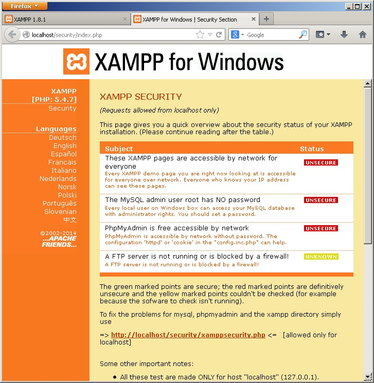
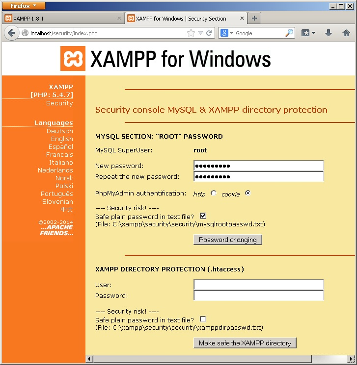
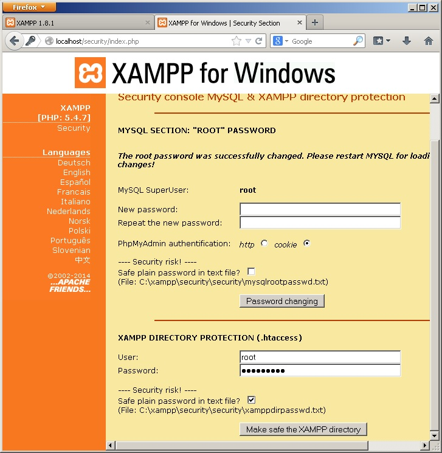
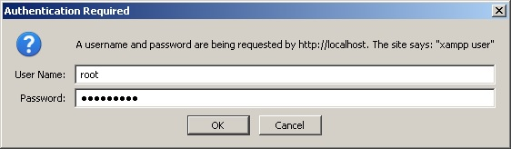
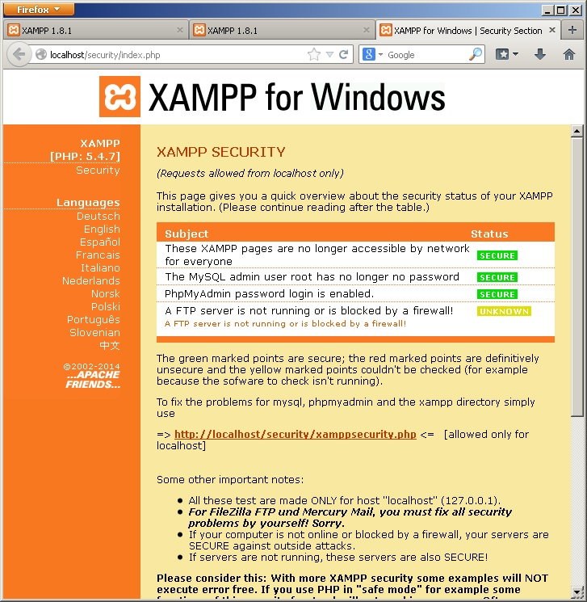
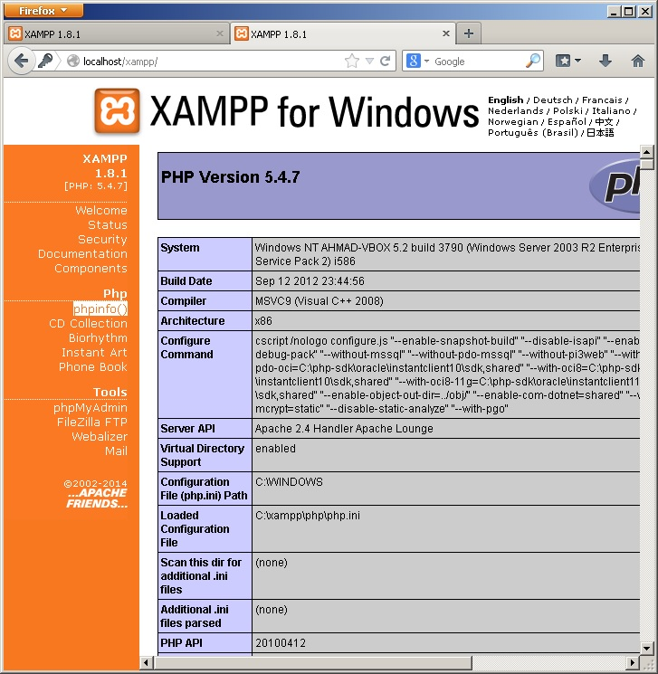

اگر مرحله ی قبلی آموزش xampp را پیگیری کرده باشید، الان xampp بر روی سیستم شما نصب شده است و کنترل پنل xampp را مشاهده می کنید.
نکته: برای مشاهده ی تصاویر در سایز اصلی و بزرگتر، بر روی آن ها کلیک کنید.
نرم افزار xampp از چندین جزء تشکیل شده است. که مهم ترین آن ها عبارتند از:
- وب سرور Apache که با ماژول mod_php نصب شده است و قابلیت اجرای کدهای PHP را دارد.
- سرور MySQL
اجزای xampp قابلیت start و stop دارند و شما می توانید آن ها را به عنوان اپلیکیشن های مستقل standalone استفاده کنید و یا آن ها را به عنوان سرویس های ویندوز نصب کنید که توسط ویندوز به طور خودکار مدیریت شود. در این مقاله ما apache و mysql را به صورت سرویس نصب نمی کنیم. اما اگر خیلی از آن ها استفاده می کنید، توصیه می کنم که آن ها را به عنوان سرویس نصب کنید (علامت ضربدر زیر Service را کلیک کنید تا به تیک سبز رنگ تبدیل شود.)
در کنترل پنل xampp می توانید اجزا را فعال و غیر فعال start/stop کنید. برای این منظور کافی است روی دکمه ی start کلیک کنید تا به عنوان مثال apache روشن شود. برای ادامه ی کار، مطابق تصویر فوق apache و mysql را روشن می کنیم و در ادامه ی کارها نیز این دو سرویس باید در حال اجرا باشند.
همانطور که در تصویر می بینید، در کنار دکمه های start/stop دکمه های Admin وجود دارد.
اگر بر روی دکمه ی Admin متعلق به Apache کلیک کنید، وارد کنترل پنل تحت وب xampp می شوید و اگر بر روی دکمه ی Admin متعلق به MySQL کلیک کنید، وارد کنترل پنل phpMyAdmin می شوید. هم اکنون بر روی دکمه ی Admin متعلق به Apache کلیک کنید تا کنترل پنل تحت وب xampp را مشاهده کنید.
اولین مرحله، انتخاب زبان است.
در این قسمت، بر روی لینک اول English کلیک کنید تا زبان انگلیسی انتخاب شود.
آن چه که مشاهده می کنید، کنترل پنل تحت وب xampp است که برخی امکانات مفید را در خصوص xampp در اختیار ما قرار می دهد. ما به ندرت به این صفحه احتیاج خواهیم داشت، اما در ابتدای کار، حتما باید برخی تنظیمات را در این صفحه انجام دهید.
از منوی سمت چپ صفحه، بر روی لینک status کلیک کنید تا صفحه ی زیر را مشاهده کنید.
در صفحه ی فوق، وضعیت سرویس های xampp را مشاهده می کنید. همانطور که در تصویر مشخص است، سرویس FTP غیر فعال است و MySQL فعال می باشد... .
هم اکنون ما می خواهیم برخی موارد امنیتی را در xampp تنظیم کنیم که شامل تنظیم پسورد برای mysql و همچنین کنترل پنل xampp می باشد.
برای این منظور، از منوی سمت چپ سایت، بر روی لینک Security کلیک کنید تا صفحه ی تنظیمات امنیتی مطابق تصویر زیر باز شود.

همانطور که در تصویر فوق مشاهده می کنید، برخی ریسک های امنیتی وجود دارد که در خصوص آن ها هشدار هایی را مشاهده می کنید.
مهم ترین مورد برای تنظیم پسورد برای MySQL می باشد. برای ادامه ی کار، بر روی لینک پایین صفحه کلید کنید:
http://localhost/security/xamppsecurity.php
تا صفحه ی مطابق شکل زیر باز شود:

همانطور که تصویر فوق مشاهده می کنید، می توانید برای MySQL پسورد تنظیم کنید.
سرور MySQL مشهورترین نرم افزار پایگاه داده ی متن باز است. کاربری که به تمام امکانات MySQL دسترسی دارد، root نام دارد و با استفاده از صفحه ی فوق، شما می توانید برای کاربر root پسوردی را انتخاب کنید. دقت کنید که پسوردی که در این قسمت وارد می کنید را به خاطر بسپارید زیرا در آینده برای استفاده از MySQL به آن احتیاج خواهید داشت.
همانطور که می بینید یک checkbox وجود دارد که با انتخاب آن می توانید پسورد را در یک فایل متنی در روی سیستم تان ذخیره کنید که بعدا اگر پسورد را فراموش کردید، بتوانید آن را بازیابی کنید. البته به لحاظ امنیتی، این کار درستی نیست، اما از آن جایی که ما داریم xampp را بر روی یک سرور خانگی نصب می کنیم، امنیت برای ما زیاد اهمیت ندارد.

همچنین برای کنترل پنل xampp هم باید پسوردی را وارد کنیم. چرا که اگر کنترل پنل xampp دارای پسود نباشد، هر کسی که به شبکه ی ما دسترسی داشته باشد، به سادگی قادر خواهد بود که به تنظیمات xampp دسترسی پیدا کند.
در این قسمت، علاوه بر پسورد، یک نام کاربری هم لازم است که توصیه می کنم برای فراموش نکردن، نام کاربری را root انتخاب کنید مطابق تصویر فوق.
پسوردی که روی کنترل پنل زمپ گذاشته می شود، در حقیقت بر روی پوشه ی xampp گذاشته می شود و داخل فایل های .htaccess و .htpasswd تنظیم می شود که در آینده در مورد آن ها بیشتر شرح خواهیم داد.
پس از این که پسورد ها را ست کردید، اگر صفحه تان را refresh کنید، مشاهده می کنید که نام کاربری و پسورد از شما درخواست می شود:

شما با وارد کردن نام کاربری و پسورد تان، مجددا کنترل پنل xampp را مشاهده می کنید که این بار اگر به صفحه ی تنظیمات امنیتی مراجعه کنید مشاهده می کنید که هشدار های امنیتی خاموش شده اند و xampp امن شده است:

در پایان، می خواهیم اطلاعات php را به دست آوریم. بر روی لینک phpinfo از منوی سمت چپ کلیک کنید تا صفحه مطابق تصویر زیر باز گردد:

صفحه ی فوق اطلاعات بسیار جامعی را در خصوص php نصب شده به شما میدهد که شرح آن خارج از حوصله ی این مقاله می باشد.
تابعی در php داریم به نام phpinfo() که این صفحه را تولید می کند. در قسمت های بعدی مجددا از آن استفاده خواهیم کرد.
لطفا در قسمت های بعدی با ما همراه باشید.
با آرزوی موفقیت برای شما.